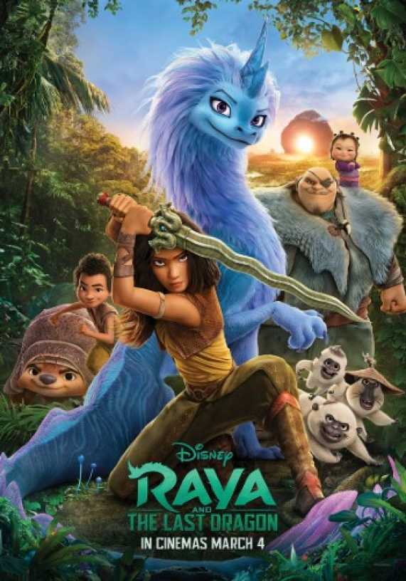

Walt Disney Animation Studios Raya and the Last Dragon travels to the fantasy world of Kumandra, where humans and dragons lived together long ago in harmony. But when an evil force threatened the land, the dragons sacrificed themselves to save humanity. Now, 500 years later, that same evil has returned and it’s up to a lone warrior, Raya, to track down the legendary last dragon to restore the fractured land and its divided people. However, along her journey, she’ll learn that it’ll take more than a dragon to save the world—it’s going to take trust and teamwork as well. Raya and the Last Dragon features the voices of Kelly Marie Tran as Raya, a warrior whose wit is as sharp as her blade, and Awkwafina as the magical, mythical, self-deprecating dragon named Sisu. Characters also include a street-savvy 10-year-old entrepreneur named Boun, the formidable giant Tong and a thieving toddler Noi with her band of Ongis.